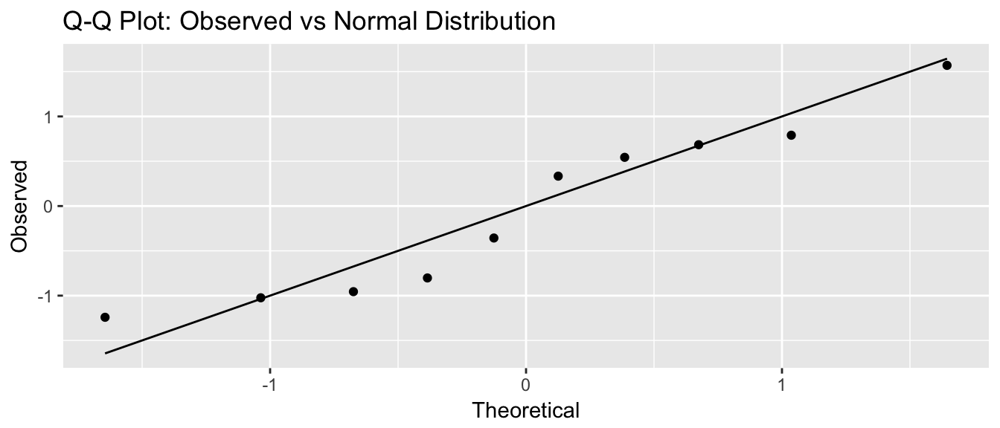
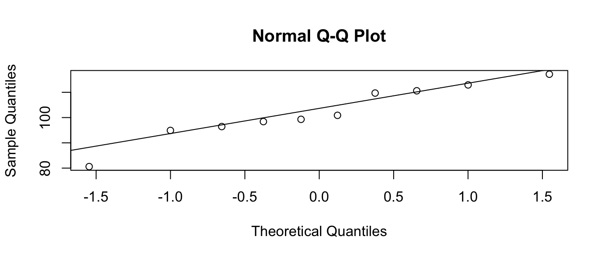
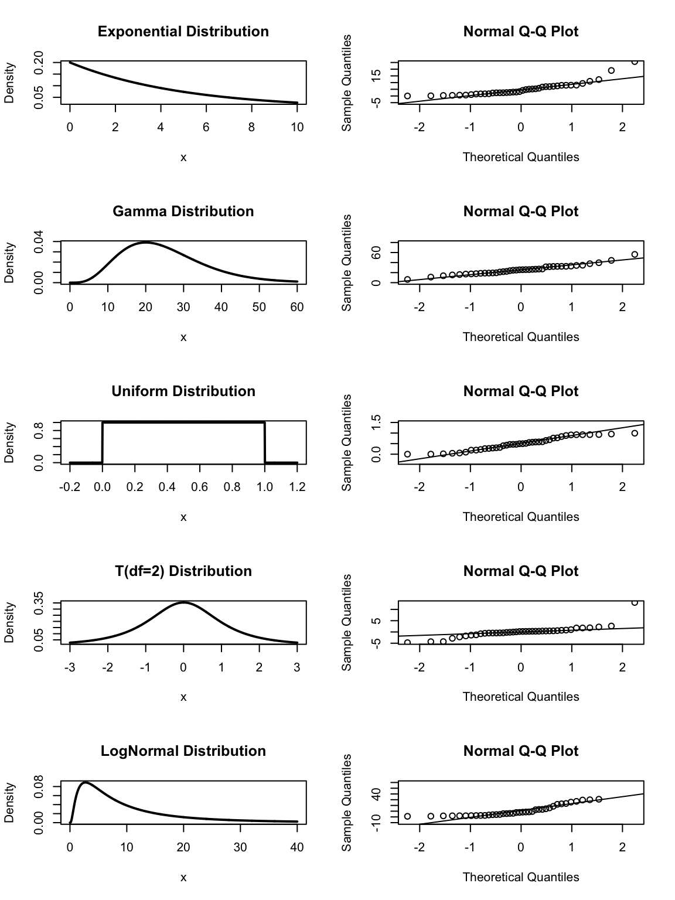
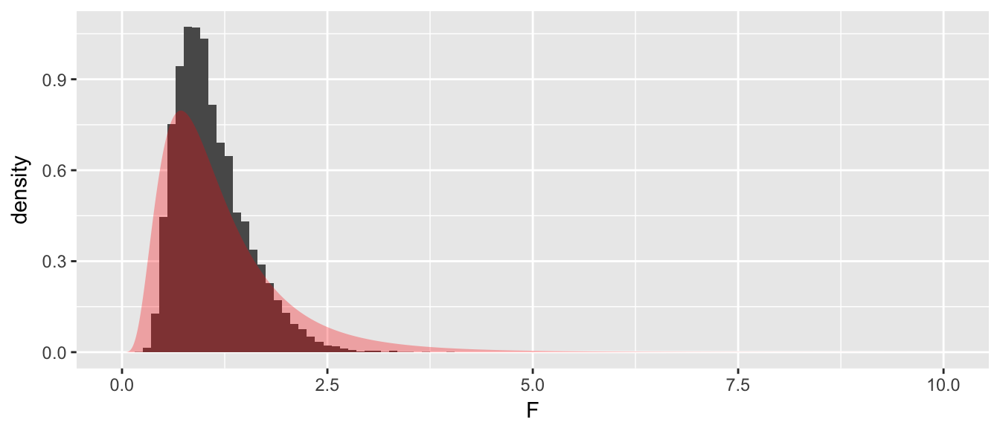

Chapter 8 Testing Model Assumptions
library(ggplot2)
library(dplyr)Performing a t-test requires that the data was drawn from a normal distribution or that the sample size is large enough that the Central Limit Theorem will guarantee that the sample means are approximately normally distributed. However, how do you decide if the data were drawn from a normal distribution, say if your sample size is between 10 and 20? If we are using a model that assumes equal variance between groups, how should we test if that assumption is true?
8.1 Testing Normality
8.1.1 Visual Inspection - QQplots
If we are taking a sample of size \(n=10\) from a standard normal distribution, then I should expect that the smallest observation will be negative. Intuitively, you would expect the smallest observation to be near the 10th percentile of the standard normal, and likewise the second smallest should be near the 20th percentile.
This idea needs a little modification because the largest observation cannot be near the 100th percentile (because that is \(\infty\)). So we’ll adjust the estimates to still be spaced at (1/n) quantile increments, but starting at the 0.5/n quantile instead of the 1/n quantile. So the smallest observation should be near the 0.05 quantile, the second smallest should be near the 0.15 quantile, and the largest observation should be near the 0.95 quantile. I will refer to these as the theoretical quantiles.

I can then graph the theoretical quantiles vs my observed values and if they lie on the 1-to-1 line, then my data comes from a standard normal distribution.
n <- 10
data <- data.frame( observed = sort( rnorm(n, mean=0, sd=1) ),
theoretical = qnorm( (1:n -.5)/n, mean=0, sd=1 ) )
library(ggplot2)
ggplot(data) +
geom_point( aes(x=theoretical, y=observed) ) +
geom_line( aes(x=theoretical, y=theoretical) ) +
labs(x='Theoretical', y='Observed', title='Q-Q Plot: Observed vs Normal Distribution')

If I think my data are normal, but with some mean \(\mu\) and standard deviation \(\sigma\), we still make the same graph, but the 1-to-1 line will be moved to pass through the 1st and 3rd quartiles. Again, the data points should be near the line. This is common enough that R has built in functions to make this graph:
n <- 10
x <- rnorm(n, mean=100, sd=10)
qqnorm(x)
qqline(x)
We now will examine a sample of \(n=40\) from a bunch of different distributions that are not normal and see what the normal QQ plot looks like. In the following graphs, pay particular attention to the tails. Notice the the t-distribution has significantly heavier tails than the normal distribution and that is reflected in the dots being lower than the line on the left and higher on the right. Likewise the logNormal distribution, which is defined by \(\log(X)\sim\) Normal has too light of a tail on the left (because logNormal variables must be greater than 0) and too heavy on the right. The uniform distribution, which is cut off at 0 and 1, has too light of tails in both directions.

8.1.2 Tests for Normality
It seems logical that there should be some sort of statistical test for if a sample is obviously non-normal. Two common ones are the Shapiro-Wilks test and the Anderson-Darling test. The Shapiro-Wilks test is available in the base installation of R with the function shapiro.test(). The Anderson-Darling test is available in the package nortest. Here we will not focus on the theory of these tests, but instead their use. In both tests the null hypothesis is that the data are normally distributed. \[\begin{aligned}
H_{0} &:\, \textrm{data are normally distributed} \\
H_{a} &:\, \textrm{data are not normally distributed}
\end{aligned}\] Therefore a small p-value is evidence against normality.
Often we want to know if our data comes from a normal distribution because our sample size is too small to rely on the Central Limit Theorem to guarantee that the sampling distribution of the sample mean is Normal. So how well do these tests detect non-normality in a small sample size case?
x <- rlnorm(n=10, meanlog=2, sdlog=2)
shapiro.test(x)##
## Shapiro-Wilk normality test
##
## data: x
## W = 0.39539, p-value = 2.207e-07So the Shapiro-Wilks test detects the non-normality in the extreme case of a logNormal distribution, but what about something closer to normal like the gamma distribution?
x <- rgamma(n=10, shape=5, rate=1/5)
shapiro.test(x)##
## Shapiro-Wilk normality test
##
## data: x
## W = 0.92703, p-value = 0.4193Here the Shapiro test fails to detect the sample has non-normality due to the small sample size. Unfortunately, the small sample-size case is exactly when we need a good test. So what do we do?
My advise is to look at the histograms of your data, normal QQ plots, and to use the Shapiro-Wilks test to find extreme non-normality, but recognize that in the small sample case, we have very little power and can only detect extreme departures from normality. If I cannot detect non-normality and my sample size is moderate (15-30), I won’t worry too much since the data isn’t too far from normal and the CLT will help normalize the sample means but for smaller sample sizes, I will use non-parametric methods (such as the bootstrap) that do not make distributional assumptions.
8.2 Testing Equal Variance
8.2.1 Visual Inspection
Often a test procedure assumes equal variances amongst groups or constant variance along a prediction gradient. The most effect way of checking to see if that assumption is met is to visually inspect the data. For the case of t-tests, boxplots are an excellent visual check. If the lengths of the boxes are not substantially different, then the equal variance assumption is acceptable.
Consider an experiment where we measure the speed of reaction to a stimulus. The subjects are told to press a button as soon as they hear a noise. Between 2 and 30 seconds later an extremely loud noise is made. Of primary interest is how inebriation affects the reaction speed. Since we can’t surprise subjects twice, only one measurement per subject is possible and a paired test is not possible. Subjects were randomly assigned to a control or alcohol group
Alcohol <- data.frame(
time=c( 0.90, 0.37, 1.63, 0.83, 0.95, 0.78, 0.86, 0.61, 0.38, 1.97,
1.46, 1.45, 1.76, 1.44, 1.11, 3.07, 0.98, 1.27, 2.56, 1.32 ),
trt = rep(c('control','alcohol'), each=10))
ggplot(Alcohol, aes(x=trt, y=time)) +
geom_boxplot()
8.2.2 Tests for Equal Variance
Consider having samples drawn from normal distributions \[X_{ij}=\mu_{i}+\epsilon_{ij}\;\;\;\;\;\;\textrm{where}\;\epsilon_{ij}\sim N\left(0,\,\sigma_{i}^{2}\right)\] where the \(i\) subscript denotes which population the observation was drawn from and the \(j\) subscript denotes the individual observation and from the \(i\)th population we observe \(n_i\) samples. In general I might be interested in evaluating if \(\sigma_i^2=\sigma_j^2\).
Let’s consider the simplest case of two populations and consider the null and alternative hypotheses: \[\begin{aligned} H_{0} &:\,\sigma_{1}^{2} = \sigma_{2}^{2} \\ H_{a} &:\,\sigma_{1}^{2} \ne \sigma_{2}^{2} \end{aligned}\] If the null hypothesis is true, then the ratio \(s_{1}^{2}/s_{2}^{2}\) should be approximately one. It can be shown that under the null hypothesis, \[f=\frac{s_{1}^{2}}{s_{2}^{2}}\sim F_{df_{1},df_{2}}\] where \(df_{1}\) and \(df_{2}\) are the associated degrees of freedom for \(s_{1}^{2}\) and \(s_{2}^{2}\). The order of these is traditionally given with the degrees of freedom of the top term first and the degrees of freedom of the bottom term second.
Variables that follow a F distribution must be non-negative and two F distributions are shown below. The F distribution is centered at \(E\left(F_{df_{1},df_{2}}\right)=\frac{df_{2}}{df_{2}-2}\approx 1\) for large values of \(df_{2}\). The variance of this distribution goes to 0 as \(df_{1}\) and \(df_{2}\) get large.

If the value of my test statistic \(f=s_{1}^{2}/s_{2}^{2}\) is too large or too small, then we will reject the null hypothesis. If we preform an F-test with an \(\alpha=0.05\) level of significance then we’ll reject \(H_{0}\) if \(f<F_{0.025,n_{1}-1,n_{2}-1}\) or if \(f>F_{0.975,n_{1}-1,n_{2}-1}\).
Example. Suppose we have two samples drawn from normally distributed populations. The first has \(n_{1}=7\) observations and a sample variance of \(s_{1}^{2}=25\) and the second sample has \(n_{2}=10\) and \(s_{2}^{2}=64\). Then \(f_{6,9}=\frac{25}{64}=0.391\) and we notice this value is is in between the lower and upper cut-off values
qf( c(0.025, .975), 6, 9)## [1] 0.1810477 4.3197218so we will fail to reject the null hypothesis. Just for good measure, we can calculate the p-value as \[\begin{aligned}p-value &= 2\cdot P(F_{n_{1}-1,n_{2}-1}<0.391) \\ &= 2\cdot P\left(F_{6,9}<0.391\right) \end{aligned}\]
2*pf(0.391, 6, 9)## [1] 0.2654714We calculate the p-value by finding the area to the left and multiplying by two because my test statistic was less than 1 (the expected value of f if \(H_{0}\) is true). If my test statistic was greater than 1, we would have found the area to the right of \(f\) and multiplied by two.
8.2.3 Symmetry of the F-distribution
When testing \[\begin{aligned} H_{0} &: \sigma_{1}^{2}=\sigma_{2}^{2} \\ H_{a} &: \sigma_{1}^{2}\ne\sigma_{2}^{2} \end{aligned}\]
The labeling of group \(1\) and group \(2\) is completely arbitrary and I should view \(f=s_{1}^{2}/s_{2}^{2}\) as the same evidence against null as \(f^{*}=s_{2}^{2}/s_{1}^{2}\). Therefore we have \[ P\left(F_{df_{1},\,df_{2}}>\frac{s_{1}^{2}}{s_{2}^{2}}\right)=P\left(F_{df_{2},\,df_{1}}<\frac{s_{2}^{2}}{s_{1}^{2}}\right) \] For example, suppose that \(n_{1}=5\) and \(n_{2}=20\) and \(s_{1}^{2}=6\) and \(s_{2}^{2}=3\) then \[P\left(F_{4,\,19}>\frac{6}{3}\right)=P\left(F_{19,\,4}<\frac{3}{6}\right)\]
1 - pf(6/3, 4, 19)## [1] 0.1354182pf(3/6, 19, 4)## [1] 0.1354182
8.3 Power of the F-test
We now turn to the question of how well does this test work? To find out we’ll take samples from normal distributions with different variances and apply our F-test to see how sensitive the test is.
set.seed(535)sigma1 <- 1
sigma2 <- 2
n1 <- 10
n2 <- 10
v1 <- var(rnorm(n1, mean=0, sd=sigma1))
v2 <- var(rnorm(n2, mean=0, sd=sigma2))
f <- v1/v2
if( f < 1 ){
p.value <- 2 * pf( f, df1 = n1-1, df2 = n2-1 )
}else{
p.value <- 2 * (1 - pf( f, df1 = n1-1, df2 = n2-1))
}
p.value## [1] 0.1142902So even though the standard deviation in the second sample was twice as large as the first, we were unable to detect it do to the small sample sizes. What happens when we take a larger sample size?
sigma1 <- 1
sigma2 <- 2
n1 <- 30
n2 <- 30
v1 <- var(rnorm(n1, mean=0, sd=sigma1))
v2 <- var(rnorm(n2, mean=0, sd=sigma2))
f <- v1/v2
if( f < 1 ){
p.value <- 2 * pf( f, df1 = n1-1, df2 = n2-1 )
}else{
p.value <- 2 * (1 - pf( f, df1 = n1-1, df2 = n2-1))
}
p.value## [1] 4.276443e-06What this tells us is that just like every other statistical test, sample size effects the power of the test. In small sample situations, you cannot rely on a statistical test to tell you if your samples have unequal variance. Instead you need to think about if the assumption is scientifically valid or if you can use a test that does not rely on the equal variance assumption.
8.4 Theoretical distribution vs bootstrap
Returning to the research example with the alcohol and control group, an F-test for different variances results in a p-value of
# Calculating everything by hand
F <- Alcohol %>%
group_by(trt) %>% # for each trt group,
summarise( s2 = var(time)) %>% # calculate variance.
summarise( F = s2[1] / s2[2] ) # and then take the ratio
F## # A tibble: 1 x 1
## F
## <dbl>
## 1 1.704753obs.F <- as.numeric( F ) # Convert 1-by-1 data frame to simple number
pvalue <- 2* (1-pf( obs.F, 9,9 ))
pvalue## [1] 0.4390223# Using Rs built in function
var.test( time ~ trt, data=Alcohol )##
## F test to compare two variances
##
## data: time by trt
## F = 1.7048, num df = 9, denom df = 9, p-value = 0.439
## alternative hypothesis: true ratio of variances is not equal to 1
## 95 percent confidence interval:
## 0.4234365 6.8633246
## sample estimates:
## ratio of variances
## 1.704753We can wonder how well the theoretical estimate of the sampling distribution (F_{9,9}) compares to the simulation based estimate of the sampling distribution.
# Permutation distribution of Observed F-statistic assuming H0 is true.
PermDist <- mosaic::do(10000) *
var.test(time ~ mosaic::shuffle(trt), data=Alcohol)$statistic
# Figure which parts of the distribution are more extreme than my observed F
PermDist <- PermDist %>%
mutate( extreme = F > obs.F | F < 1/obs.F )# Make a histogram of the permutation distribution along with the theoretical
ggplot(PermDist, aes(x=F, y=..density..)) +
geom_histogram(binwidth=.25) +
geom_area( data=data.frame(x=seq(0,10,length=1000)) %>%
mutate(y=df(x, 9,9)),
aes(x=x, y=y), alpha=.3, fill='red')
# p-value... what percent is more extreme than what I observed?
PermDist %>% summarise(p.value = mean(extreme))## p.value
## 1 0.6141The theoretical sampling distribution is more concentrated near 1 than the simulation estimate. As a result, the p-value is a bit larger, but in both cases, we cannot reject equal variances.
Example: Lets consider a case where we have two groups of moderate sample sizes where there is a difference in variance. Suppose we consider the set of times in takes me to bike to work in the morning versus biking home. On the way to work, I get to go down Beaver street, but on the way home there is a lot of elevation gain. Also surprisingly often on the way home I run into other cyclists I know and we stop and chat or we end up riding some place neither of us has to go.
Commute <- data.frame(
time = c(21.0, 22.1, 19.3, 22.4, 19.6, 19.8,
19.6, 20.4, 21.1, 19.7, 19.9, 20.0,
25.0, 27.8, 25.2, 25.1, 25.4, 25.9,
30.3, 29.5, 25.1, 26.4, 24.4, 27.7,
25.8, 27.1),
type = c( rep('Morning',12), rep('Evening',14)))
ggplot(Commute, aes(x=type, y=time)) +
geom_boxplot() +
labs(title='Commute Times', y='Time (minutes)', x='Time of Day') +
theme_bw()
We now test to see if there is a significant difference between the variances of these two groups. If we feel comfortable with assuming that these data come from normal distributions, then the theoretical method is appropriate.
var.test( time ~ type, data=Commute )##
## F test to compare two variances
##
## data: time by type
## F = 3.039, num df = 13, denom df = 11, p-value = 0.07301
## alternative hypothesis: true ratio of variances is not equal to 1
## 95 percent confidence interval:
## 0.8959971 9.7171219
## sample estimates:
## ratio of variances
## 3.038978But if we are uncomfortable with the normality assumption (the Shapiro-Wilks test indicates moderate evidence to reject normality for both samples due to the positive skew in both) we could compare our observed F-statistic to the simulation based estimate of the sampling distribution.
# obs.F = 3.04
obs.F <- var.test(time ~ type, data=Commute)$statistic
# create the permutation distribution of F-values
PermDist <- mosaic::do(10000) *
var.test(time ~ mosaic::shuffle(type), data=Commute)$statistic
# Figure which parts of the distribution are more extreme than my observed F
PermDist <- PermDist %>%
mutate( extreme = F > obs.F | F < 1/obs.F ) # F > 3.04 or F < 1/3.04# Make a histogram of the permutation distribution and theoretical
ggplot(PermDist, aes(x=F, y=..density..)) +
geom_histogram(binwidth=.1) +
geom_area( data=data.frame(x=seq(0,10,length=1000)) %>%
mutate(y=df(x, 13, 11)),
aes(x=x, y=y), alpha=.3, fill='red')
# p-value... what proportion is more extreme than what I observed?
PermDist %>% summarise(p.value = mean(extreme))## p.value
## 1 0.0019We again see that with this small of a data set, our simulation based p-value is different from the theoretical based p-value. This is primarily due to the non-normality of our data along with the small sample sizes. In general as our sample sizes increase the simulation based and theoretical based distributions should give similar inference and p-values.
8.5 Exercises
To find the probabilities for the F-distribution, we will use the function
pf(f, df1, df2)where thefis the value for which we want to find the probability of finding a value less than. That is \[P\left(F_{2,10}<4.2\right)=\]pf(4.2, df1=2, df2=10)## [1] 0.9525855- Using the probability function for the F-distribution in R, find the following probabilities:
- \(P\left(F_{5,5}<\frac{1}{2}\right)\)
- \(P\left(F_{5,5}>\frac{2}{1}\right)\)
- \(P\left(F_{4,10}>\frac{6}{1}\right)\)
- \(P\left(F_{10,4}<\frac{1}{6}\right)\)
- From what you calculated in part (a), comment on the reciprocal symmetry of the F-distribution.
- Using the probability function for the F-distribution in R, find the following probabilities:
- In this exercise we will examine the variability of samples from various distributions and how easily departures from normality are detected using qqplots and the Shapiro-Wilks test. Under no circumstances should you turn in page after page of output or graphs. Produce a table that summarizes how often the test rejects the null hypotheses and include at most one figure of QQ-plots. To receive credit, you must comment on the table and graph and describe what you observe and why you observed what you did.
The following code will create a random sample from a normal distribution and draw the qqplot. Also notice the results of the Shapiro-Wilks test. Investigate the behavior of repeated samples (ie run this code at least 10 times). Repeat with increased sample sizes (do this for n=5,25,100,400). Describe your results.
par(mfrow=c(1,2)) # 1 row of 2 graphs, side-by-side n <- 5 # sample size is 5 x <- rnorm(n, mean=25, sd=5) # draw random sample from a normal distribution hist(x) # histogram qqnorm(x) # qqplot for normality qqline(x) # add a line to the above plot shapiro.test(x) # do the test for normalityRepeat problem (a) but consider samples drawn from a distribution that is not normal, in this case, the gamma distribution with parameters
shape=3, andrate=2.par(mfrow=c(1,2)) # 1 row of 2 graphs, side-by-side n <- 5 # sample size is 5 x <- rgamma(n, shape=3, rate=2) # draw random sample from a gamma distribution hist(x) # histogram qqnorm(x) # qqplot for normality qqline(x) # add a line to the above plot shapiro.test(x) # do the test for normality
In this exercise, we will examine the variability of samples from a normal distribution. The following code will generate random samples from a normal distribution, create boxplots, and perform an F-test for equal variance. Run the code many times (again 20 or more times) and investigate the effects of changing your sample size and the mean and standard deviation of each group. Under no circumstances should you turn in page after page of output or graphs. For each question produce a table that summarizes how often the test rejects the null hypotheses and include at most one figure of boxplots. To receive credit, you must comment on the table and graph and describe what you observe and why you observed what you did.
par(mfrow=c(1,1)) # 1 row of 1: Just one graph n <- 5 sigma <- c(2,2) # Standard deviations of each group my.data <- data.frame(y = c(rnorm( n, mean=0, sd=sigma[1] ), rnorm( n, mean=0, sd=sigma[2] )), group = c( rep('g1',n), rep('g2',n) )) boxplot(y ~ group, data=my.data) var.test(y ~ group, data=my.data)- How often does the F-test reject (at \(\alpha=0.05\) level) equal variance when the variances of the two groups are equal? (Run the above code 20 or more times.) Does this appear to change as the sample size gets larger?
- How often does the F-test reject (at \(\alpha=0.05\) level) equal variance when the variances are different, say \(\sigma_{1}=2\) and \(\sigma_{2}=4\)? (Run your code many times!)
- Is it surprising to you how much variability there is in the widths of the boxplots when the data are generated having the same standard deviation? With both groups having the same standard deviation, investigate the variability in boxplot widths as \(n\) is \(5,20\), and \(50\).
We are interested in testing if the variance is equal among two populations that are known to be normal. A sample of size \(n_{1}=15\) from the first population resulted in a sample mean and standard deviation of \(\bar{x}_{1}=52\) and \(s_{1}=7\) while the sample of size \(n_{2}=20\) from the second population had a sample mean and standard deviation of \(\bar{x}_{2}=42\) and \(s_{2}=4\). Perform an F-test with \(\alpha=0.05\) to test if the variances are different. Because the data is not given, all calculations must be done by-hand, except the usual probability look up.
The life span of an electrical component was studied under two operating voltages (110 and 220). Ten components were randomly assigned to operate at 110 volts and 16 were assigned to 220 volts. The time to failure (in hundreds of hours) for the 26 components were obtained:
110 19.25 19.7 19.75 19.9 19.95 20.05 20.13 20.2 20.4 20.6 220 9.7 9.75 9.8 9.82 9.85 9.90 9.92 9.96 10.01 10.02 10.10 10.11 10.13 10.19 10.28 10.31 - Calculate the mean and variance of each sample group
- Test the assumption that the data in each group is normally distributed.
- Create the QQplots first and comment on their fit.
- Perform the Shapiro-Wilks test to assess normality.
- Test the assumption that the variances in each group are equal
- By hand, perform a two-side hypothesis test that variances in each group are equal. Here, “by hand” means to calculate the f-statistic by hand and then form the probability statement that defines the p-value. Then use the pf() function to calculate the actual p-value.
- Using the R function
var.test()confirm your calculations in part (ii).